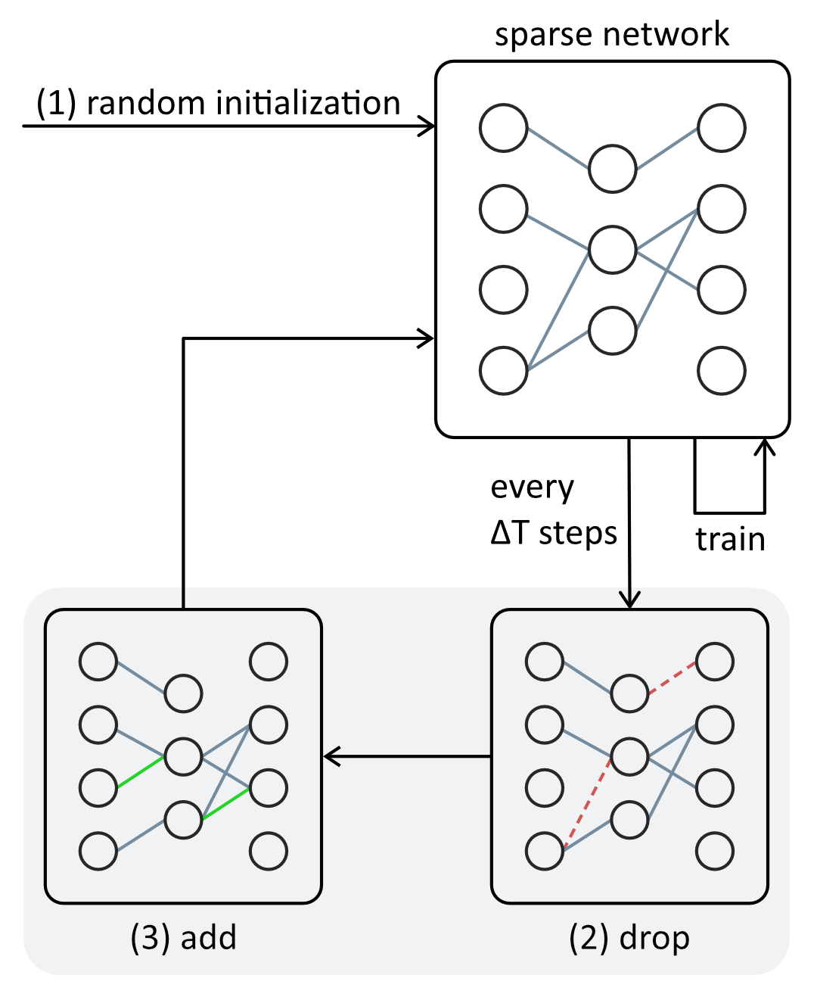

Training Sparse Neural Networks: RigL
Introduction
RigL is an algorithm for training sparse neural networks from scratch. According to the authors RigL achieves better accuracy for a given computational budget compared to previous sparse-to-sparse training methods [1]. Sprase-to-sparse means that the algorithm trains a sparse model from scratch without the need to train a dense model first. Moreover memory and computational costs are proportional to the density of the network with RigL meaning that one can easily adjust the sparsity to meet a given memory or computational budget (for training and inference). Finally the connections of the sparse network can be intialized randomly at the beginning, there are no lucky initializations needed to achieve good model performance.
The RigL Algorithm
Let's take a closer look at the algorithm proposed by the Google researchers.
Overview
The algorithm consists of two key components:
(1) Initialization:
A sparse network is generated by randomly initializing the connections. Typically a sparse network has only 5-20% of the connections of a fully connected (dense) network.
(2) Training:
The training of the network is similar to regular training (e.g. doing stochastic gradient descent), except that every $\Delta T$ training steps
the connections of the network are updated: First connections with the lowest magnitude (the weights that are close to zero) are removed. Then connections
where the gradients magnitude is highest are added as they are the connections expected to recieve high gradients in the next training step and thus
increase model performance the fastest.

More details
During the initialization each layer gets assigned a sparsity. The simplest solution proposed by the authors is to assign the same sparsity to each layer except that the first layer is kept dense. Another option is to scale the sparsity with the number of neurons in that layer. This makes layers with more neurons more sparse. A third option only differs from the second one in convolutional layers where the sparsity is scaled proportional to the number of neurons plus the width and height of the kernel. In all of the options bias and batch-norm parameters are kept dense as they only have a negligible effect on the total parameter count.
During training the connections are updated every $\Delta T$ training steps until the iteration $T_{end}$ is reached. After that training can continue but the connections are not changed anymore. The authors state that setting $T_{end}$ to 75% of the total training iterations works well. Moreover the authors state that decreasing the fraction of updated connections over time offers the best results.
Limitations
The authors claim that RigL achieves better accuracy than other sparse-to-sparse training techniques for a given computational budget. However this claim is based on a theoretical estimation of how many operations (multiplications and additions) are needed for inference and training. In reality this theoretical computational budget is difficult to achieve. Getting faster training and inference times with a sparse network is not as straightforward as one might think. Simply setting entries of the weight matrices to zero neither reduces inference time nor memory usage. Instead techniques like 2:4 structured sparsity have to be used to compress the weight matrices and to speed up computation. Because of this a variant of RigL called Structured RigL (or SRigL for short) [2] was proposed. SRigL achieves faster training and inference times in the real world by using structured sparsity.Implementations
A torch implementation of RigL can be found here: verbiiyo/rigl-torch. However, this implementation does not take advantage of the sparsity so the training and inference of the model will not be faster.Sources
| [1] | Evci, U., Gale, T., Menick, J., Castro, P., & Elsen, E. (2020). Rigging the Lottery: Making All Tickets Winners. In Proceedings of the 37th International Conference on Machine Learning (pp. 2943-2952). PMLR. https://proceedings.mlr.press/v119/evci20a/evci20a.pdf |
| [2] | Lasby, M., Golubeva, A., Evci, U., Nica, M., & Ioannou, Y. (2024). Dynamic Sparse Training with Structured Sparsity. In The Twelfth International Conference on Learning Representations. https://proceedings.iclr.cc/paper_files/paper/2024/file/8c5f30296296d2ae402ebbd09aaa9c12-Paper-Conference.pdf |